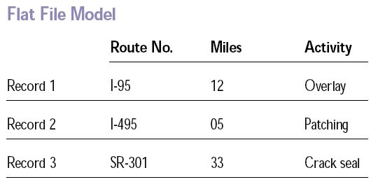

Gotta pick a model
The model determines the logical structure of the database and decides the way data can be stored, organized, and manipulated.
Some models...
Flat model (aka spreadsheet) = precursor to the relational model.
Photo credit: Wikimedia
Some models...
Hierarchical model = tree-like structure; siblings are in a particular order; one to many relationships.

Photo credit: Ludichart
Some models...
Network model = builds on the hierarchical model because it allows many-to-many relationships.

Photo credit: Ludichart
Some models...
Graph model = builds on the network model because any node can be connected to any other node.

Photo credit: Wikimedia
Some models...
Object-oriented model = database becomes a collection of objects with associated features and methods.
- Multimedia database = allows for media, such as images.
- Hypertext database = allows any object to link to any other object.
Some models...
Entity-relationship model = captures relationships, but isn’t directly tied to the physical structure of the database.

Photo credit: Lucidchart